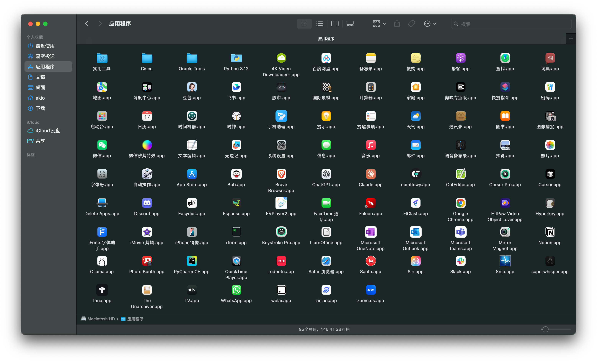
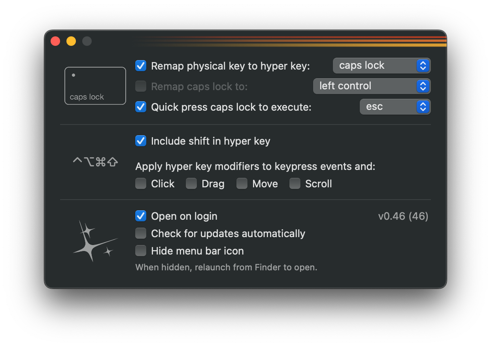

1Prepare Bootable USB Stick# Plug in a USB drive (>=16GB), it will be ERASED
# Replace "MyUSB" with your drive name, adjust app name if needed
sudo /Applications/Install\ macOS\ Sonoma.app/Contents/Resources/createinstallmedia \
--volume /Volumes/MyUSB --nointeraction
# Insert USB installation media
# Reboot and keep pressing *Power* key
# Plug in a USB drive (>=16GB), it will be ERASED # Replace "MyUSB" with your drive name, adjust app name if needed sudo /Applications/Install\ macOS\ Sonoma.app/Contents/Resources/createinstallmedia \ --volume /Volumes/MyUSB --nointeraction # Insert USB installation media # Reboot and keep pressing *Power* key
Optional, prepare a bootable ISO for vm use
# Create blank DMG hdiutil create -o ~/Desktop/macOS.cdr -size 16g -layout SPUD -fs HFS+J # Mount it hdiutil attach ~/Desktop/macOS.cdr.dmg -noverify -mountpoint /Volumes/install_build # Copy installer sudo /Applications/Install\ macOS\ Sonoma.app/Contents/Resources/createinstallmedia \ --volume /Volumes/install_build --nointeraction # Detach hdiutil detach /Volumes/Install\ macOS\ Sonoma # Convert to ISO hdiutil convert ~/Desktop/macOS.cdr.dmg -format UDTO -o ~/Desktop/macOS.iso mv ~/Desktop/macOS.iso.cdr ~/Desktop/macOS.iso
2Restore folders/files from backup
# Important folders list
~/Library/Services/
~/Library/Fonts/
~/Library/Preferences/
~/Library/Application Support/
~/Documents/
~/Downloads/
~/Desktop/
~/c
~/Applications/
/Applications/
3Install Applications and Fonts
brew install wget tree tmux nmap # iTerm2 config backup @ iCloud/c/macOS iTerm2 Profiles Only 20250823.json iTerm2 State.itermexport # font list @ iCloud/c/fonts InputMono #<--- my default font for code InputSans InputSerif Mononoki-Nerd-Font NotoSans REDACTED_FONT
3.1我的应用程序列表pic

pic

4Customization
4.1Monitor-
1512x982 (Default) Internet & Web (sRGB)ProMotion
1512x982 (Default)Internet & Web (sRGB)ProMotion4.2Internet Account- iCloud
- Exchange (for my work Calendar only)
4.3Keyboard- 听写 (中英文) 快捷键
- 输入法（ABC和
讯飞 (讯飞输入法登陆同步词库， 听写快捷键） - 键盘快捷键
# 键盘快捷键设置备份到iCloud
~/Library/Preferences/com.apple.symbolichotkeys.plist/com.apple.symbolichotkeys.plist
讯飞 (讯飞输入法登陆同步词库， 听写快捷键）# 键盘快捷键设置备份到iCloud
~/Library/Preferences/com.apple.symbolichotkeys.plist/com.apple.symbolichotkeys.plist 4.4MacOS键盘快捷键地图 - 与Oracle Linux对照版类型 MacOS应用 Key Oracle Linux 9 应用 指定 ◆/hyper/super esc ⎋ when pressed alonehyper ◆ when press with other keyRefer to Hyperkey.app⇪ capslockesc ⎋ when pressed alonesuper ◆ when press with other keyRefer to /etc/keyd/default.conf窗口 LaunchPad⌘ A 全选 ◆ AShow all applications 脚本 CotEditor 文本编辑器 类似gedit ◆ Btoggle_app gedit窗口 Center 居中窗口⌘ C 复制 ◆ C- 窗口 Desktop 显示桌面 ⌘ ⌥ D Show/Hide Docker ◆ DHide all normal windows 文件 Finder ◆ EHome folder 窗口 Fill 填充屏幕⌃ ⌘ F系统内置全屏切换⌘ F 查找 ◆ FToggle maximization state 脚本 Google Chrome⌘ G 查找下一个⇧ ⌘ G 查找上一个◆ Gtoggle_app google-chrome窗口 Hide/Minimize 隐藏当前应用⌥ ⌘ H 隐藏其他应用 ◆ HHide window iTerm2 iTerm2⌥ i Hide/Show all iTerm2 Window ◆ I- 脚本 quick-open◆ Jquick-open
- ◆ K- 输入法 Mac听写 （中文英） ◆ L-
- ◆ MShow the notification list 备忘录 Notes⌘ N 新建窗口(Finder)⇧ ⌘ N 新建文件夹(Finder) ◆ NFocus the active notification 脚本 quick-open —raw-capture◆ Oquick-open —raw-capture拼音输入 - ◆ P- 系统 - ⌃ ⌘ Q 立即锁屏⇧ ⌘ Q 注销当前用户（需确认）⇧ ⌥ ⌘ Q 直接注销（不需确认） ◆ Q- 窗口 Restore Window ◆ RRestore Window⇧⌃⌥ R 录屏 窗口 进入调度中心Mission Control ◆ SShow the overview 窗口 全屏幕拼贴到右侧⌘ T 新建标签页 ◆ T- 脚本 quick-open —no-open◆ Uquick-open —no-open窗口 View Notification⌘ V 粘贴 ◆ VShow the notification list 窗口/文件 文件->关闭⌘ W 关闭窗口⌥ ⌘ W 关闭当前应用的所有窗口◆ WClose window 窗口 显示->进入全屏幕/显示->退出全屏幕⌘ X 剪切◆ XToggle fullscreen mode 脚本 quick-open —one-value◆ Yquick-open —one-value仅用于测试 -⌘ Z 撤销⇧ ⌘ Z 重做 ◆ Z- 终端 快捷指令：启动iTerm ◆ ⏎ entertoggle_app gnome-terminal输入法-符号-AI Next Input Methold⌃ ␣ Last Input Methold⌃ ⌘ ␣ 输入表情符号🦋⌘ ␣ 暂无设置 计划 豆包AI
⌥ ␣ 暂无设置 计划 OpenAI ◆ ␣ spaceSwitch to next input source 窗口 -🌐 ← = Home ↖︎ 移动到当前行或文档的开头⌘ ← 跳到行首 ◆ ← left- 窗口 -🌐 → = End ↘︎ 移动到当前行或文档的末尾⌘ → 跳到行尾 ◆ → right- 窗口 -⌘ ↑ 返回上一级目录(Finder)🌐↑ = Page Up ⇞ 向上翻一屏 ◆ ↑ up- 窗口 -⌘ ↓ 打开所选项🌐↓ = Page Down ⇟ 向下翻一屏 ◆ ↓ down- 窗口 在同一应用的多个窗口间切换cmd ` 显示相同应用的全部窗口 ◆ `/~ grave accent, backticktilde/tildeSwitch windows of an application 工作空间 切换到桌面1 ◆ 1Switch to workspace 1 窗口 窗口->全屏幕拼贴->屏幕左侧◆ 2- 窗口 窗口->移动与调整大小->左侧与四等分⇧ ⌘ 3 截取全屏◆ 3- 窗口 四分排列⇧ ⌘ 4 截取选定区域⇧ ⌘ 4 ␣ 截取某个窗口 ◆ 4- 窗口 窗口->移动与调整大小->顶部与四等分⇧ ⌘ 5 打开截图工具（支持录屏）◆ 5- 系统 -
⇧ ⌘ 6截取 Touch Bar（若有） ◆ 6- - - ◆ 7- - - ◆ 8- - - ◆ 9- 辅助功能 打开或关闭缩放 ◆ 0Turn zoom on or off 辅助功能 缩小 ◆ -/_ hyphen,minus/underscoreZoom out 辅助功能 放大 ◆ =/+ equals sign/plusZoom in 辅助功能 打开或关闭焦点跟随 ◆ ]/} right bracket/right brace- - - ◆ \/| backslash/pipe- 窗口 窗口->移动与调整大小->顶部◆ [/{ left bracket/left braceVolume up 窗口 窗口->移动与调整大小->左侧◆ ;/: semicolon/colonView split on left 窗口 窗口->移动与调整大小->右侧◆ '/" apostrophe,quote/double quoteView split on right 工作空间 向左切换全屏应用或桌面 ◆ ,/< comma/less thanMove to workspace on the left 工作空间 向右切换全屏应用或桌面 ◆ ./> period,dot,full stop/greater thanMove to workspace on the right 窗口 窗口->移动与调整大小->底部◆ //? slash,forward slash/question markVolume down 输入法 -⌃ 🌐 讯飞中文听写 中文识别更准 🌐 fn, function- 输入法 -禁用讯飞中英文切换，减少干扰 ⇧ shift- iTerm2 双击 control 召唤 iTerm2 Hotkey Window⌃ control- 窗口 ⌘ Tab 切换应用⇥ tab- 窗口 ⌥ ⌘ ⎋ 强制退出应用⎋ esc,escape- 系统 ⌃ ⌘ ⏻ 强制重启长按 ⏻ 重启进入boot menu⏻ power/touch id- 文件 ⌘ ⌫ 移到废纸篓⇧ ⌘ ⌫ 清空废纸篓（需确认） ⌥ ⇧ ⌘ ⌫ 直接清空废纸篓（不需确认）⌫ delete-
类型 | MacOS应用 | Key | Oracle Linux 9 应用 |
|---|---|---|---|
指定 ◆/hyper/super | esc ⎋ when pressed alonehyper ◆ when press with other keyRefer to Hyperkey.app | ⇪ capslock | esc ⎋ when pressed alonesuper ◆ when press with other keyRefer to /etc/keyd/default.conf |
窗口 | LaunchPad ⌘ A 全选 | ◆ A | Show all applications |
脚本 | CotEditor 文本编辑器 类似 gedit | ◆ B | toggle_app gedit |
窗口 | Center 居中窗口 ⌘ C 复制 | ◆ C | - |
窗口 | Desktop 显示桌面 ⌘ ⌥ D Show/Hide Docker | ◆ D | Hide all normal windows |
文件 | Finder | ◆ E | Home folder |
窗口 | Fill 填充屏幕 ⌃ ⌘ F系统内置全屏切换⌘ F 查找 | ◆ F | Toggle maximization state |
脚本 | Google Chrome⌘ G 查找下一个⇧ ⌘ G 查找上一个 | ◆ G | toggle_app google-chrome |
窗口 | Hide/Minimize 隐藏当前应用 ⌥ ⌘ H 隐藏其他应用 | ◆ H | Hide window |
iTerm2 | iTerm2 ⌥ i Hide/Show all iTerm2 Window | ◆ I | - |
脚本 | quick-open | ◆ J | quick-open |
- | ◆ K | - | |
输入法 | Mac听写 （中文英） | ◆ L | - |
- | ◆ M | Show the notification list | |
备忘录 | Notes ⌘ N 新建窗口(Finder)⇧ ⌘ N 新建文件夹(Finder) | ◆ N | Focus the active notification |
脚本 | quick-open —raw-capture | ◆ O | quick-open —raw-capture |
拼音输入 | - | ◆ P | - |
系统 | - ⌃ ⌘ Q 立即锁屏⇧ ⌘ Q 注销当前用户（需确认）⇧ ⌥ ⌘ Q 直接注销（不需确认） | ◆ Q | - |
窗口 | Restore Window | ◆ R | Restore Window ⇧⌃⌥ R 录屏 |
窗口 | 进入调度中心Mission Control | ◆ S | Show the overview |
窗口 | 全屏幕拼贴到右侧 ⌘ T 新建标签页 | ◆ T | - |
脚本 | quick-open —no-open | ◆ U | quick-open —no-open |
窗口 | View Notification ⌘ V 粘贴 | ◆ V | Show the notification list |
窗口/文件 | 文件->关闭⌘ W 关闭窗口⌥ ⌘ W 关闭当前应用的所有窗口 | ◆ W | Close window |
窗口 | 显示->进入全屏幕/显示->退出全屏幕⌘ X 剪切 | ◆ X | Toggle fullscreen mode |
脚本 | quick-open —one-value | ◆ Y | quick-open —one-value |
仅用于测试 | - ⌘ Z 撤销⇧ ⌘ Z 重做 | ◆ Z | - |
终端 | 快捷指令：启动iTerm | ◆ ⏎ enter | toggle_app gnome-terminal |
输入法-符号-AI | Next Input Methold ⌃ ␣ Last Input Methold⌃ ⌘ ␣ 输入表情符号🦋⌘ ␣ 暂无设置 计划 豆包AI
⌥ ␣ 暂无设置 计划 OpenAI | ◆ ␣ space | Switch to next input source |
窗口 | - 🌐 ← = Home ↖︎ 移动到当前行或文档的开头⌘ ← 跳到行首 | ◆ ← left | - |
窗口 | - 🌐 → = End ↘︎ 移动到当前行或文档的末尾⌘ → 跳到行尾 | ◆ → right | - |
窗口 | - ⌘ ↑ 返回上一级目录(Finder)🌐↑ = Page Up ⇞ 向上翻一屏 | ◆ ↑ up | - |
窗口 | - ⌘ ↓ 打开所选项🌐↓ = Page Down ⇟ 向下翻一屏 | ◆ ↓ down | - |
窗口 | 在同一应用的多个窗口间切换 cmd ` 显示相同应用的全部窗口 | ◆ `/~ grave accent, backticktilde/tilde | Switch windows of an application |
工作空间 | 切换到桌面1 | ◆ 1 | Switch to workspace 1 |
窗口 | 窗口->全屏幕拼贴->屏幕左侧 | ◆ 2 | - |
窗口 | 窗口->移动与调整大小->左侧与四等分⇧ ⌘ 3 截取全屏 | ◆ 3 | - |
窗口 | 四分排列 ⇧ ⌘ 4 截取选定区域⇧ ⌘ 4 ␣ 截取某个窗口 | ◆ 4 | - |
窗口 | 窗口->移动与调整大小->顶部与四等分⇧ ⌘ 5 打开截图工具（支持录屏） | ◆ 5 | - |
系统 | -
⇧ ⌘ 6截取 Touch Bar（若有） | ◆ 6 | - |
- | - | ◆ 7 | - |
- | - | ◆ 8 | - |
- | - | ◆ 9 | - |
辅助功能 | 打开或关闭缩放 | ◆ 0 | Turn zoom on or off |
辅助功能 | 缩小 | ◆ -/_ hyphen,minus/underscore | Zoom out |
辅助功能 | 放大 | ◆ =/+ equals sign/plus | Zoom in |
辅助功能 | 打开或关闭焦点跟随 | ◆ ]/} right bracket/right brace | - |
- | - | ◆ \/| backslash/pipe | - |
窗口 | 窗口->移动与调整大小->顶部 | ◆ [/{ left bracket/left brace | Volume up |
窗口 | 窗口->移动与调整大小->左侧 | ◆ ;/: semicolon/colon | View split on left |
窗口 | 窗口->移动与调整大小->右侧 | ◆ '/" apostrophe,quote/double quote | View split on right |
工作空间 | 向左切换全屏应用或桌面 | ◆ ,/< comma/less than | Move to workspace on the left |
工作空间 | 向右切换全屏应用或桌面 | ◆ ./> period,dot,full stop/greater than | Move to workspace on the right |
窗口 | 窗口->移动与调整大小->底部 | ◆ //? slash,forward slash/question mark | Volume down |
输入法 | - ⌃ 🌐 讯飞中文听写 中文识别更准 | 🌐 fn, function | - |
输入法 | - 禁用 讯飞中英文切换，减少干扰 | ⇧ shift | - |
iTerm2 | 双击 control 召唤 iTerm2 Hotkey Window | ⌃ control | - |
窗口 | ⌘ Tab 切换应用 | ⇥ tab | - |
窗口 | ⌥ ⌘ ⎋ 强制退出应用 | ⎋ esc,escape | - |
系统 | ⌃ ⌘ ⏻ 强制重启长按 ⏻ 重启进入boot menu | ⏻ power/touch id | - |
文件 | ⌘ ⌫ 移到废纸篓⇧ ⌘ ⌫ 清空废纸篓（需确认）⌥ ⇧ ⌘ ⌫ 直接清空废纸篓（不需确认） | ⌫ delete | - |
4.5Hyperkey.app

4.6Finder# 执行隐藏命令
chflags hidden ~/Pictures ~/Library ~/miniconda3 ~/Movies ~/ Music ~/Pictures ~/Public ~/Applications ~/comflowy
# 恢复显示隐藏的文件夹
# chflags nohidden ~/Pictures ~/Library ~/miniconda3 ~/Movies ~/ Music ~/Pictures ~/Public ~/Applications ~/comflowy
# 执行隐藏命令 chflags hidden ~/Pictures ~/Library ~/miniconda3 ~/Movies ~/ Music ~/Pictures ~/Public ~/Applications ~/comflowy # 恢复显示隐藏的文件夹 # chflags nohidden ~/Pictures ~/Library ~/miniconda3 ~/Movies ~/ Music ~/Pictures ~/Public ~/Applications ~/comflowy